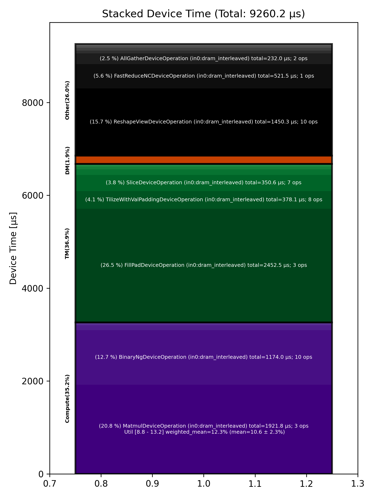

🚀 Performance Report 🚀 ======================== ID Total % Bound OP Code Device Device Time Op-to-Op Gap Cores DRAM DRAM % FLOPs FLOPs % Math Fidelity ------------------------------------------------------------------------------------------------------------------------------------------------------------------------ 20 0.0 % LayerNormDeviceOperation 22 110 μs 16 BF16, BF16 => BF16 42 0.0 % ReshapeViewDeviceOperation 28 29 μs 31 μs 72 BF16 => BF16 89 0.0 % UntilizeWithUnpaddingDeviceOperation 12 9 μs 67 μs 45 BF16 => BF16 106 0.0 % RepeatDeviceOperation 28 60 μs 166 μs 72 BF16 => BF16 133 0.0 % TilizeWithValPaddingDeviceOperation 27 292 μs 36 μs 45 BF16 => BF16 193 0.0 % SLOW MatmulDeviceOperation 32 x 2880 x 736 11 1,393 μs 106 μs 23 54 GB/s 18.8 % 3.1 TFLOPs 13.2 % HiFi4 BF16 x BFP8 => BF16 216 0.0 % BinaryNgDeviceOperation 13 21 μs 1 μs 72 BF16, BF16 => BF16 256 0.0 % UntilizeWithUnpaddingDeviceOperation 9 24 μs 1 μs 32 BF16 => BF16 269 0.0 % SliceDeviceOperation 31 155 μs 1 μs 72 BF16 => BF16 295 0.0 % TilizeWithValPaddingDeviceOperation 2 28 μs 1 μs 32 BF16 => BF16 333 0.0 % UnaryDeviceOperation 31 9 μs 1 μs 72 BF16 => BF16 355 0.0 % BinaryNgDeviceOperation 25 18 μs 1 μs 72 BF16, BF16 => BF16 405 0.0 % UntilizeWithUnpaddingDeviceOperation 23 24 μs 1 μs 32 BF16 => BF16 441 0.0 % SliceDeviceOperation 12 154 μs 1 μs 72 BF16 => BF16 452 0.0 % TilizeWithValPaddingDeviceOperation 26 28 μs 1 μs 32 BF16 => BF16 485 0.0 % UnaryDeviceOperation 27 9 μs 1 μs 72 BF16 => BF16 523 0.0 % BinaryNgDeviceOperation 29 18 μs 248 μs 72 BF16, BF16 => BF16 576 0.0 % UnaryDeviceOperation 9 12 μs 243 μs 72 BF16 => BF16 591 0.0 % BinaryNgDeviceOperation 6 14 μs 89 μs 72 BF16, BF16 => BF16 626 0.0 % BinaryNgDeviceOperation 20 14 μs 156 μs 72 BF16, BF16 => BF16 664 0.0 % SLOW MatmulDeviceOperation 32 x 384 x 2880 5 496 μs 542 μs 45 85 GB/s 29.4 % 4.6 TFLOPs 9.9 % HiFi4 BF16 x BFP8 => BF16 689 0.0 % ReduceScatterDeviceOperation 0 178 μs 74 μs 24 BF16 => BF16 721 0.0 % AllGatherDeviceOperation 0 178 μs 242 μs 40 BF16 => BF16 747 0.0 % BinaryNgDeviceOperation 29 87 μs 1 μs 72 BF16, BF16 => BF16 801 0.0 % ReshapeViewDeviceOperation 8 1,247 μs 43 μs 72 BF16 => BF16 826 0.0 % TypecastDeviceOperation 16 56 μs 1 μs 72 BF16 => FP32 841 0.0 % ReshapeViewDeviceOperation 0 47 μs 1 μs 72 FP32 => FP32 872 0.0 % SLOW MatmulDeviceOperation 32 x 2880 x 32 1 33 μs 1 μs 1 14 GB/s 5.0 % 0.2 TFLOPs 8.8 % HiFi2 FP32 x BFP8 => FP32 913 0.0 % TypecastDeviceOperation 4 2 μs 2 μs 1 FP32 => BF16 958 0.0 % FillPadDeviceOperation 11 3 μs 2 μs 1 BF16 => BF16 987 0.0 % PadDeviceOperation 17 37 μs 1 μs 2 BF16 => BF16 1014 0.0 % FillPadDeviceOperation 15 5 μs 2 μs 1 BF16 => BF16 1032 0.0 % TopKDeviceOperation 1 44 μs 2 μs 1 BF16 => BF16 1063 0.0 % SliceDeviceOperation 2 1 μs 130 μs 1 BF16 => BF16 1103 0.0 % SliceDeviceOperation 6 1 μs 87 μs 1 UINT16 => UINT16 1130 0.0 % TypecastDeviceOperation 28 2 μs 182 μs 1 UINT16 => INT32 1160 0.0 % ReshapeViewDeviceOperation 1 5 μs 100 μs 16 INT32 => INT32 1190 0.0 % UntilizeWithUnpaddingDeviceOperation 3 3 μs 178 μs 16 INT32 => INT32 1249 0.0 % UntilizeWithUnpaddingDeviceOperation 8 3 μs 245 μs 16 INT32 => INT32 1273 0.0 % PermuteDeviceOperation 12 3 μs 80 μs 16 INT32 => INT32 1284 0.0 % PermuteDeviceOperation 26 3 μs 179 μs 16 INT32 => INT32 1342 0.0 % ConcatDeviceOperation 11 2 μs 85 μs 32 INT32, INT32 => INT32 1363 0.0 % PermuteDeviceOperation 21 3 μs 196 μs 16 INT32 => INT32 1402 0.0 % TilizeWithValPaddingDeviceOperation 16 7 μs 100 μs 16 INT32 => INT32 1437 0.0 % SoftmaxDeviceOperation 19 24 μs 308 μs 72 BF16 => BF16 1457 0.0 % AllGatherDeviceOperation 0 54 μs 573 μs 24 INT32 => INT32 1474 0.0 % AllBroadcastDeviceOperation 8 38 μs 221 μs 4 BF16 => BF16 1520 0.0 % UntilizeWithUnpaddingDeviceOperation 5 7 μs 114 μs 1 BF16 => BF16 1542 0.0 % UntilizeWithUnpaddingDeviceOperation 3 7 μs 151 μs 1 BF16 => BF16 1582 0.0 % UntilizeWithUnpaddingDeviceOperation 7 7 μs 74 μs 1 BF16 => BF16 1626 0.0 % UntilizeWithUnpaddingDeviceOperation 16 7 μs 205 μs 1 BF16 => BF16 1659 0.0 % ConcatDeviceOperation 17 2 μs 238 μs 64 BF16, BF16 => BF16 1679 0.0 % TilizeWithValPaddingDeviceOperation 6 5 μs 83 μs 2 BF16 => BF16 1724 0.0 % ReshapeViewDeviceOperation 18 10 μs 194 μs 8 INT32 => INT32 1748 0.0 % SliceDeviceOperation 22 2 μs 240 μs 8 INT32 => INT32 1767 0.0 % UntilizeWithUnpaddingDeviceOperation 2 14 μs 96 μs 8 INT32 => INT32 1810 0.0 % SliceDeviceOperation 20 4 μs 181 μs 72 INT32 => INT32 1851 0.0 % TilizeWithValPaddingDeviceOperation 17 8 μs 221 μs 8 INT32 => INT32 1871 0.0 % BinaryNgDeviceOperation 6 11 μs 104 μs 72 INT32, INT32 => INT32 1914 0.0 % BinaryNgDeviceOperation 16 3 μs 151 μs 72 INT32, INT32 => INT32 1936 0.0 % ReshapeViewDeviceOperation 5 7 μs 262 μs 8 INT32 => INT32 1985 0.0 % ReshapeViewDeviceOperation 8 3 μs 82 μs 8 BF16 => BF16 2013 0.0 % UntilizeWithUnpaddingDeviceOperation 19 7 μs 175 μs 1 INT32 => INT32 2041 0.0 % UntilizeWithUnpaddingDeviceOperation 12 6 μs 84 μs 1 BF16 => BF16 2054 0.0 % ScatterDeviceOperation 3 60 μs 173 μs 1 BF16, INT32 => BF16 2105 0.0 % TilizeWithValPaddingDeviceOperation 12 5 μs 52 μs 64 BF16 => BF16 2143 99.6 % ReshapeViewDeviceOperation 10 23 μs 4,480,931 μs 2 BF16 => BF16 2149 0.0 % UntilizeDeviceOperation 27 4 μs 289 μs 2 BF16 => BF16 2184 0.0 % MeshPartitionDeviceOperation 1 2 μs 1,911 μs 16 BF16 => BF16 2226 0.0 % TilizeWithValPaddingDeviceOperation 20 4 μs 161 μs 1 BF16 => BF16 2244 0.0 % TransposeDeviceOperation 26 2 μs 295 μs 72 BF16 => BF16 2297 0.0 % ReshapeViewDeviceOperation 12 50 μs 347 μs 72 BF16 => BF16 2326 0.0 % BinaryNgDeviceOperation 15 938 μs 121 μs 72 BF16, BF16 => BF16 2364 0.1 % FillPadDeviceOperation 18 2,445 μs 1 μs 72 BF16 => BF16 2401 0.0 % FastReduceNCDeviceOperation 8 521 μs 1 μs 72 BF16 => BF16 2431 0.0 % SliceDeviceOperation 10 34 μs 1 μs 72 BF16 => BF16 2464 0.0 % BinaryNgDeviceOperation 9 48 μs 1 μs 72 BF16, BF16 => BF16 2482 0.0 % ReshapeViewDeviceOperation 20 29 μs 1 μs 72 BF16 => BF16 ------------------------------------------------------------------------------------------------------------------------------------------------------------------------ 100.0 % 78 device ops, 0 host ops, 0 signposts 9,260 μs 4,491,663 μs 📊 Stacked report 📊 ==================== Total % Op Code Device Time Sum Op Count Op Category Min FLOPs Max FLOPs Mean FLOPs Std FLOPs Weighted Mean FLOPs ------------------------------------------------------------------------------------------------------------------------------------------------------------------------------ 26.48 % FillPadDeviceOperation (in0:dram_interleaved) 2,452.53 μs 3 TM 20.75 % MatmulDeviceOperation (in0:dram_interleaved) 1,921.79 μs 3 Compute 8.81 % 13.18 % 10.62 % 2.28 % 12.25 % 15.66 % ReshapeViewDeviceOperation (in0:dram_interleaved) 1,450.33 μs 10 Other 12.68 % BinaryNgDeviceOperation (in0:dram_interleaved) 1,174.04 μs 10 Compute 5.63 % FastReduceNCDeviceOperation (in0:dram_interleaved) 521.46 μs 1 Other 4.08 % TilizeWithValPaddingDeviceOperation (in0:dram_interleaved) 378.07 μs 8 TM 3.79 % SliceDeviceOperation (in0:dram_interleaved) 350.63 μs 7 TM 2.51 % AllGatherDeviceOperation (in0:dram_interleaved) 231.99 μs 2 Other 1.93 % ReduceScatterDeviceOperation (in0:dram_interleaved) 178.44 μs 1 DM 1.29 % UntilizeWithUnpaddingDeviceOperation (in0:dram_interleaved) 119.03 μs 12 TM 1.18 % LayerNormDeviceOperation (in0:dram_interleaved) 109.62 μs 1 Compute 0.65 % TypecastDeviceOperation (in0:dram_interleaved) 60.34 μs 3 TM 0.65 % RepeatDeviceOperation (in0:dram_interleaved) 60.25 μs 1 Other 0.64 % ScatterDeviceOperation (in0:dram_interleaved) 59.57 μs 1 Other 0.48 % TopKDeviceOperation (in0:dram_interleaved) 44.08 μs 1 Other 0.41 % AllBroadcastDeviceOperation (in0:dram_interleaved) 38.42 μs 1 Other 0.40 % PadDeviceOperation (in0:dram_interleaved) 36.72 μs 1 TM 0.33 % UnaryDeviceOperation (in0:dram_interleaved) 30.62 μs 3 Compute 0.25 % SoftmaxDeviceOperation (in0:dram_interleaved) 23.59 μs 1 Compute 0.08 % PermuteDeviceOperation (in0:dram_interleaved) 7.82 μs 3 TM 0.04 % UntilizeDeviceOperation (in0:dram_interleaved) 4.03 μs 1 TM 0.04 % ConcatDeviceOperation (in0:dram_interleaved) 3.26 μs 2 TM 0.02 % TransposeDeviceOperation (in0:dram_interleaved) 1.81 μs 1 TM 0.02 % MeshPartitionDeviceOperation (in0:dram_interleaved) 1.75 μs 1 Other ------------------------------------------------------------------------------------------------------------------------------------------------------------------------------
